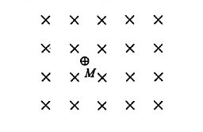
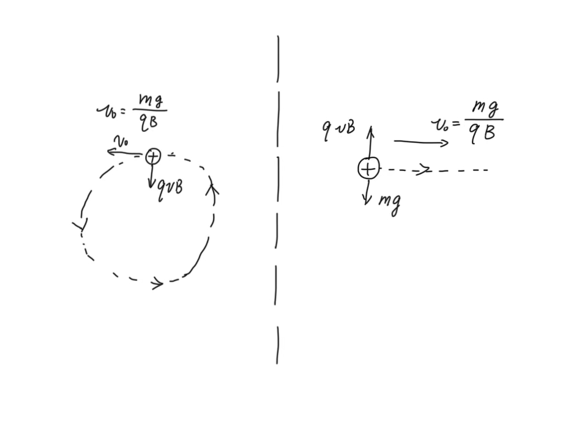
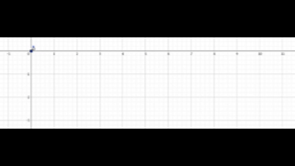

一点思考，欢迎指正错误、提出建议！
必修二中，我们学习过 运动的合成与分解 这一课，课本指出：
运动的合成与分解遵从矢量运算法则。
并且我们也学习了合运动和分运动间具有 等效性（各分运动叠加的效果与合运动相同）、独立性（分运动间相互独立、互不干扰）和 等时性（合运动和分运动同时开始与结束）。
在 2024 年北京市朝阳区一模第 20 题中，就出现了基于运动的合成与分解的考察（配速法）：
根据牛顿力学经典理论，只要物体的初始条件和受力情况确定，就可以推知物体此后的运动情况。
情境 1：如图 1 所示，空间存在水平方向的匀强磁场（垂直纸面向里），磁感应强度大小为 B，在磁场中 M 点处有一质量为 m、电荷量为 +q 的带电粒子。已知重力加速度 g。
（1）若使带电粒子获得某一水平向右的初速度，恰好作匀速直线运动，求该速度的大小 ;
（2）若在 M 点静止释放该粒子，其运动将比较复杂。为了研究该粒子的运动，可以应用运动的合成与分解的方法，将它为零的初速度分解为大小相等的水平向左和水平向右的速度。求粒子运动过程中的最大速率。
......
在 (1) 中，粒子受到向下的重力 和向上的洛伦兹力 ，当二者平衡时、它做匀速直线运动，有 .
(2) 中，题目提示我们 “可以应用运动的合成与分解的方法，将它为零的初速度分解为大小相等的水平向左和水平向右的速度”，并且 (1) 中也提醒我们，当速度 时，粒子做匀速直线运动，因此我们可以：
-
将粒子的速度分解为向左、向右的两个速度，大小均为 .
-
- 其中 向右的速度 在 洛伦兹力 和 重力 （二力平衡）的作用下，做 匀速直线运动、速度大小为 .（如下图右侧）
- 向左的速度 在 洛伦兹力 的作用下，做 匀速圆周运动、速度大小为 .（如下图左侧）

-
当左右两个运动速度均向右时，其合成的运动速度最大，大小为 ，即 .
但是我们发现，两个分运动都各自具有一个洛伦兹力，但是合运动却只有一个洛伦兹力，所以说在分解合运动的时候，我们是让洛伦兹力凭空增加了一个吗？
其实不然，我们可以理解为“在磁场中有速度就有洛伦兹力”，分运动具有速度、而且他们也有“独立性”，所以各自一定会有洛伦兹力，分运动的两个洛伦兹力之矢量和与合运动的一个洛伦兹力是相等的。
类似地，如果把“弹簧拉着小球做圆周运动”正交分解成了两个“弹簧拉着小球做简谐运动”的分运动，其中弹簧的弹力是“有‘位移’就有弹力”，因此两个分运动具有两个弹力。
但是重力是恒定的，它不因位移或者速度的改变而发生变化，所以分解时不能“一个分运动一个重力 ”。
在运动的分解与合成中，我们应该把握对位移 / 速度 / 加速度（力）这三个矢量的分解与合成。例如，物体合运动的位移等于各个分运动位移的矢量和。
在这道题中，我们就可以借助这样的思想分析粒子的运动位移（轨迹）：
（以初始位置为原点，当时间 时）
- 分运动 匀速直线运动 的位移 .
- 分运动 匀速圆周运动 的位移 .
- 合运动的位移 .
